Each mouse has a 555 Timer oscillating circuit glued to the belly, with photoresistors so they can interact with each other. They are now wired to string together like xmas lights but until I get a video of that here is a WIP video: https://vimeo.com/803792379
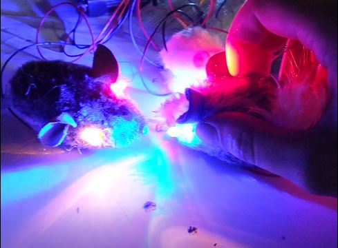I got the schematic for this pedal fuzzcentral's site (http://fuzzcentral.ssguitar.com/rangemaster.php). I had access to a PCB mill, so I used it for this project.
Here's a screenshot of the schematic and board layout, made with Eagle
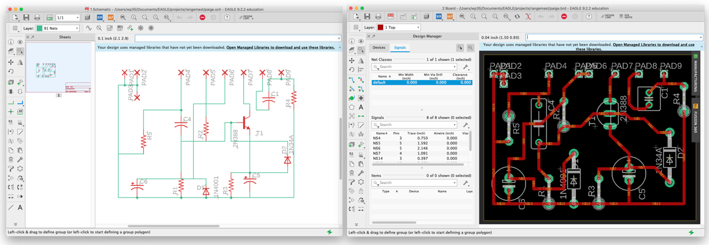Here is the Othermill, and the finished circuit
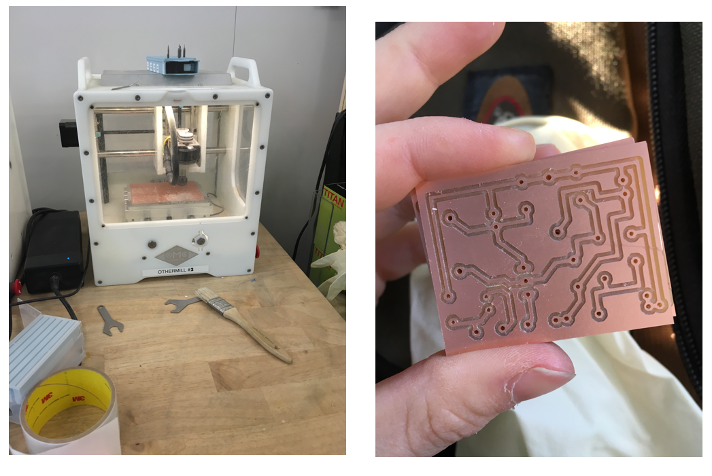And here is that same PCB populated with components. I later added a light.

If you'd like to mill your own, you can use my .brd file I uploaded here: https://github.com/paigeplan/rangemaster.
A guitar pedal build from a schematic I found online: http://www.generalguitargadgets.com/effects-projects/octave/dan-armstrong-green-ringer/
Milling attempt 1 (made too big)

Milling attempt 2 (correctly sized)

A video I took of the milling process: https://www.youtube.com/watch?v=JWC9TfbezAU&t=7s
Here it is all assembled. I drilled the enclosure this time.

I also perf-boarded this one.

If you'd like to mill your own, you can use my .brd file I uploaded here: https://github.com/paigeplan/rangemaster.
A one handed computer keyboard, modeled after Doug Englebart's invention.
I was asked to help convert this headlamp from an old ERV into a desk lamp. I used a buck converter to tune the voltage to the desired brightness.
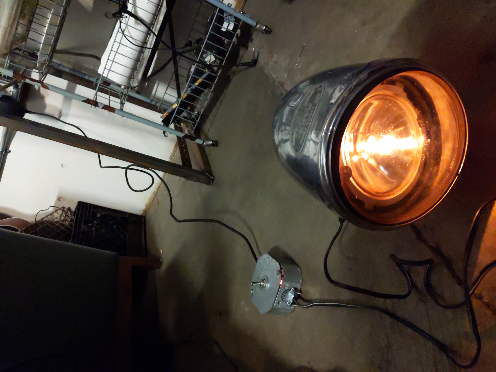Some things I've made for myself:
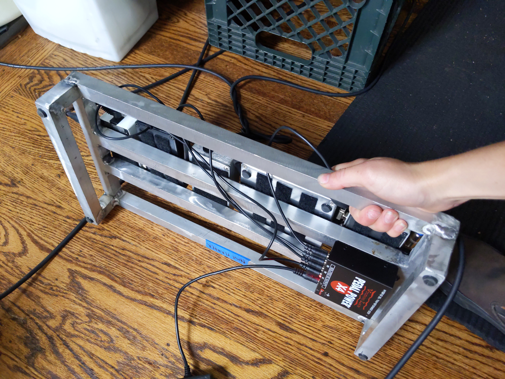 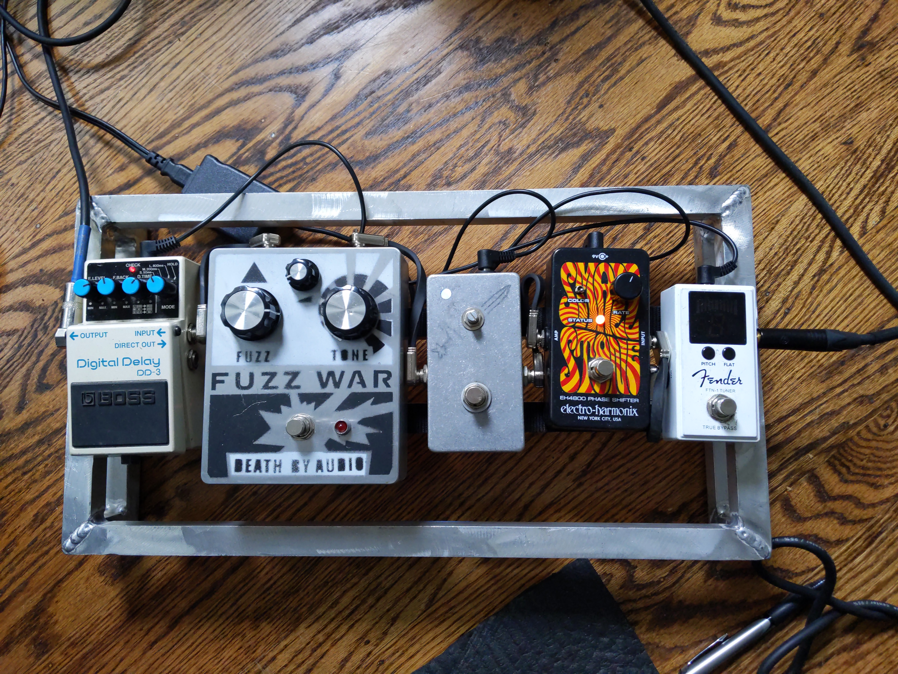 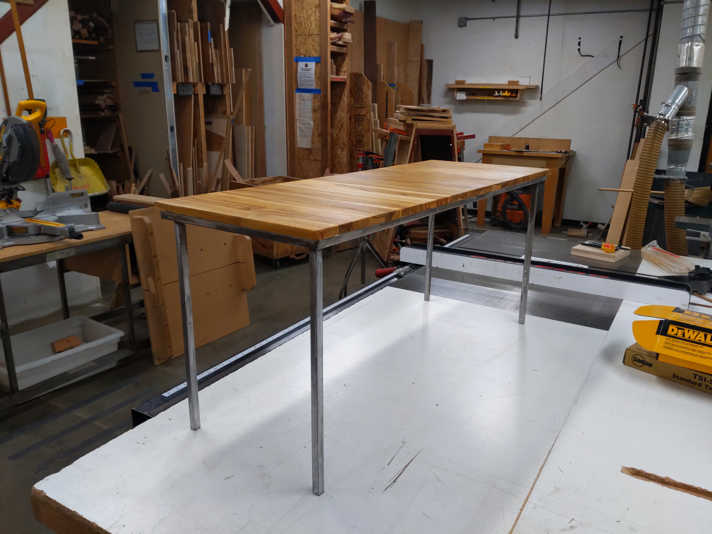 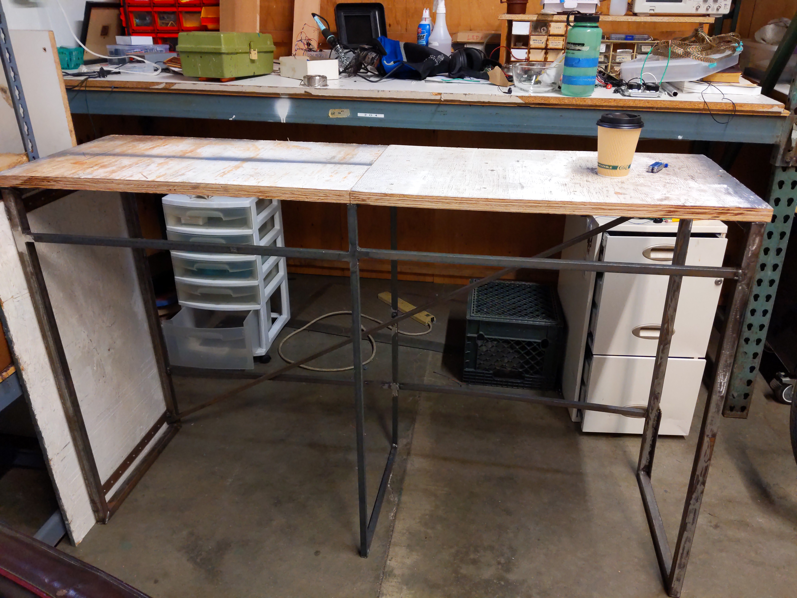 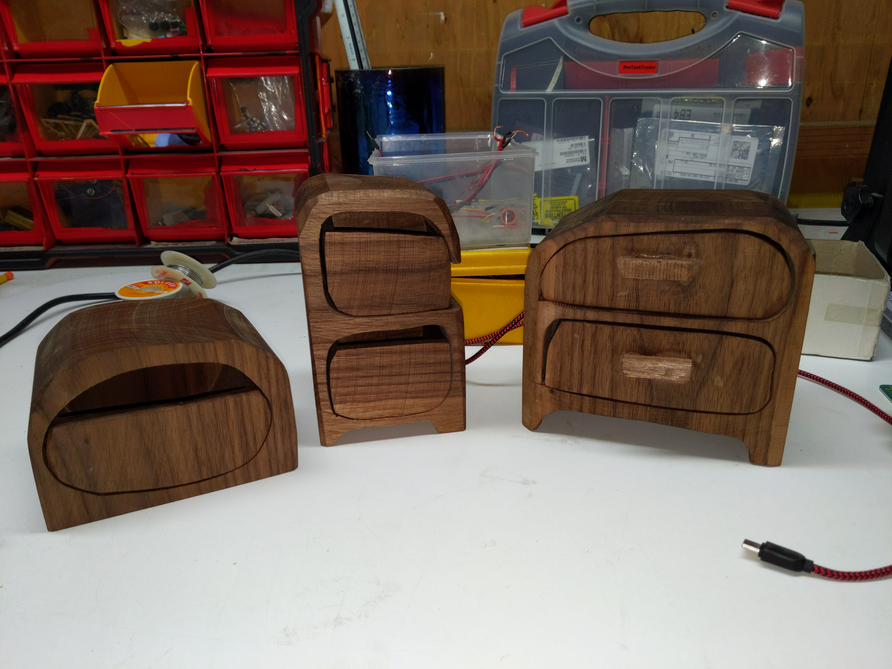 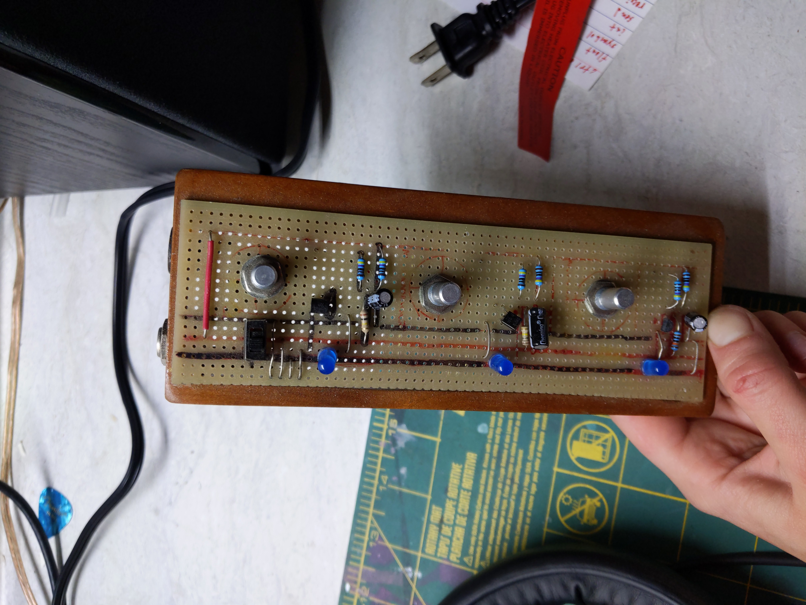 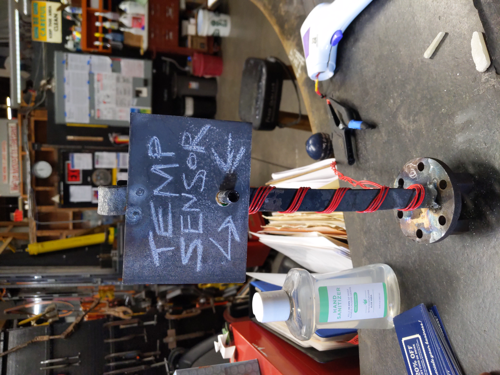 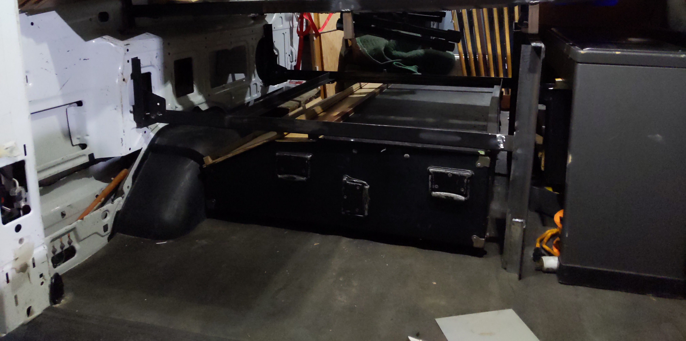